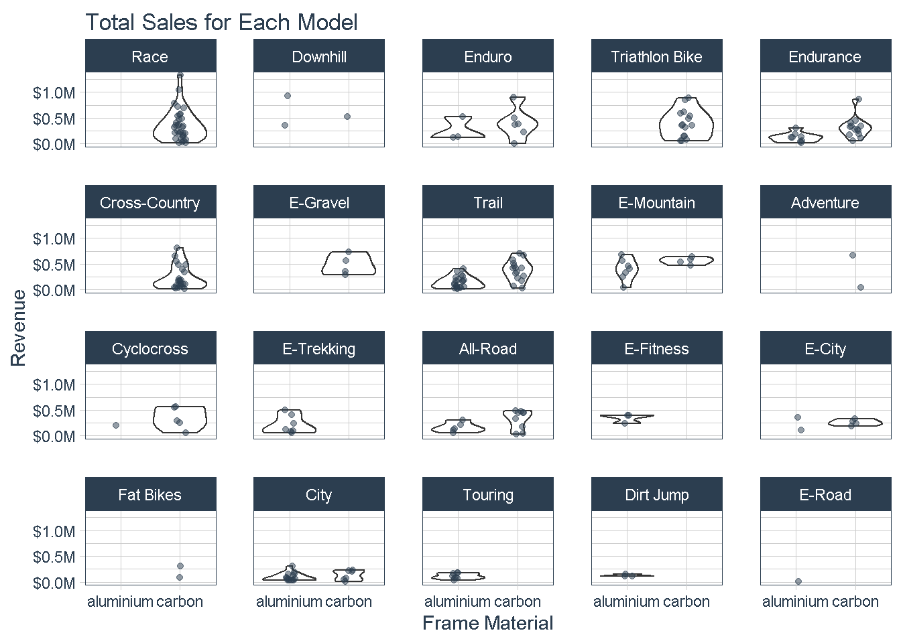
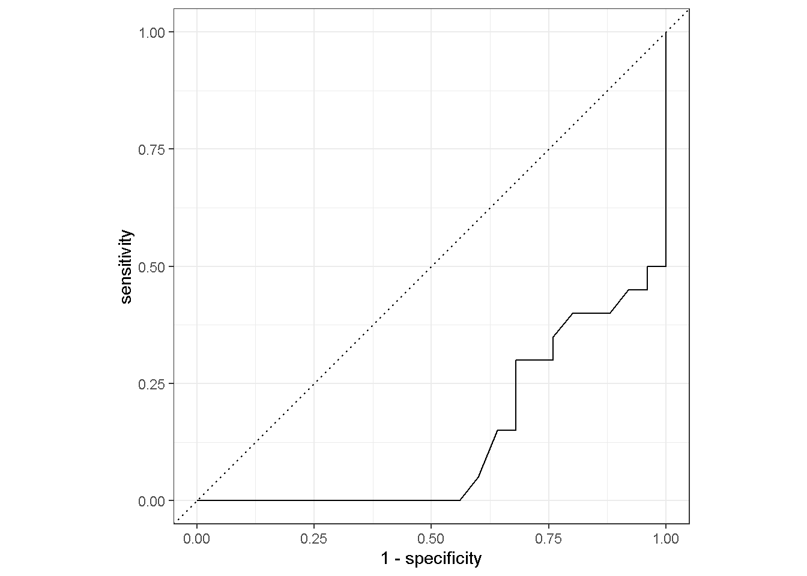
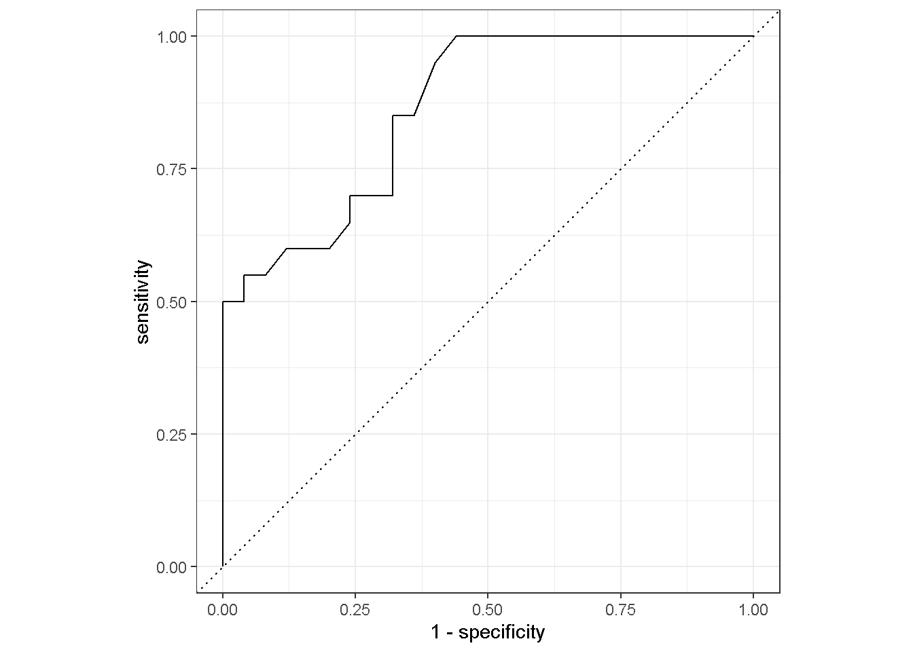

# I. Build a model
# Standard
library(tidyverse)
# Modeling
library(parsnip)
# Preprocessing & Sampling
library(recipes)
library(rsample)
# Modeling Error Metrics
library(yardstick)
# Plotting Decision Trees
library(rpart.plot)
library(workflows)
library(vip)
# Modeling ----------------------------------------------------------------
bike_orderlines_tbl <- readRDS("raw_data/bike_orderlines.rds")
model_sales_tbl <- bike_orderlines_tbl %>%
select(total_price, model, category_2, frame_material) %>%
group_by(model, category_2, frame_material) %>%
summarise(total_sales = sum(total_price)) %>%
ungroup() %>%
arrange(desc(total_sales))
model_sales_tbl %>%
mutate(category_2 = as_factor(category_2) %>%
fct_reorder(total_sales, .fun = max) %>%
fct_rev()) %>%
ggplot(aes(frame_material, total_sales)) +
geom_violin() +
geom_jitter(width = 0.1, alpha = 0.5, color = "#2c3e50") +
#coord_flip() +
facet_wrap(~ category_2) +
scale_y_continuous(labels = scales::dollar_format(scale = 1e-6, suffix = "M", accuracy = 0.1)) +
tidyquant::theme_tq() +
labs(
title = "Total Sales for Each Model",
x = "Frame Material", y = "Revenue"
)
bike_features_tbl <- readRDS("raw_data/bike_features_tbl.rds")
#glimpse(bike_features_tbl)
bike_features_tbl <- bike_features_tbl %>%
select(model:url, `Rear Derailleur`, `Shift Lever`) %>%
mutate(
`shimano dura-ace` = `Rear Derailleur` %>% str_to_lower() %>% str_detect("shimano dura-ace ") %>% as.numeric(),
`shimano ultegra` = `Rear Derailleur` %>% str_to_lower() %>% str_detect("shimano ultegra ") %>% as.numeric(),
`shimano 105` = `Rear Derailleur` %>% str_to_lower() %>% str_detect("shimano 105 ") %>% as.numeric(),
`shimano tiagra` = `Rear Derailleur` %>% str_to_lower() %>% str_detect("shimano tiagra ") %>% as.numeric(),
`Shimano sora` = `Rear Derailleur` %>% str_to_lower() %>% str_detect("shimano sora") %>% as.numeric(),
`shimano deore` = `Rear Derailleur` %>% str_to_lower() %>% str_detect("shimano deore(?! xt)") %>% as.numeric(),
`shimano slx` = `Rear Derailleur` %>% str_to_lower() %>% str_detect("shimano slx") %>% as.numeric(),
`shimano grx` = `Rear Derailleur` %>% str_to_lower() %>% str_detect("shimano grx") %>% as.numeric(),
`Shimano xt` = `Rear Derailleur` %>% str_to_lower() %>% str_detect("shimano deore xt |shimano xt ") %>% as.numeric(),
`Shimano xtr` = `Rear Derailleur` %>% str_to_lower() %>% str_detect("shimano xtr") %>% as.numeric(),
`Shimano saint` = `Rear Derailleur` %>% str_to_lower() %>% str_detect("shimano saint") %>% as.numeric(),
`SRAM red` = `Rear Derailleur` %>% str_to_lower() %>% str_detect("sram red") %>% as.numeric(),
`SRAM force` = `Rear Derailleur` %>% str_to_lower() %>% str_detect("sram force") %>% as.numeric(),
`SRAM rival` = `Rear Derailleur` %>% str_to_lower() %>% str_detect("sram rival") %>% as.numeric(),
`SRAM apex` = `Rear Derailleur` %>% str_to_lower() %>% str_detect("sram apex") %>% as.numeric(),
`SRAM xx1` = `Rear Derailleur` %>% str_to_lower() %>% str_detect("sram xx1") %>% as.numeric(),
`SRAM x01` = `Rear Derailleur` %>% str_to_lower() %>% str_detect("sram x01|sram xo1") %>% as.numeric(),
`SRAM gx` = `Rear Derailleur` %>% str_to_lower() %>% str_detect("sram gx") %>% as.numeric(),
`SRAM nx` = `Rear Derailleur` %>% str_to_lower() %>% str_detect("sram nx") %>% as.numeric(),
`SRAM sx` = `Rear Derailleur` %>% str_to_lower() %>% str_detect("sram sx") %>% as.numeric(),
`SRAM sx` = `Rear Derailleur` %>% str_to_lower() %>% str_detect("sram sx") %>% as.numeric(),
`Campagnolo potenza` = `Rear Derailleur` %>% str_to_lower() %>% str_detect("campagnolo potenza") %>% as.numeric(),
`Campagnolo super record` = `Rear Derailleur` %>% str_to_lower() %>% str_detect("campagnolo super record") %>% as.numeric(),
`shimano nexus` = `Shift Lever` %>% str_to_lower() %>% str_detect("shimano nexus") %>% as.numeric(),
`shimano alfine` = `Shift Lever` %>% str_to_lower() %>% str_detect("shimano alfine") %>% as.numeric()
) %>%
# Remove original columns
select(-c(`Rear Derailleur`, `Shift Lever`)) %>%
# Set all NAs to 0
mutate_if(is.numeric, ~replace(., is.na(.), 0))
# 2.0 TRAINING & TEST SETS ----
bike_features_tbl <- bike_features_tbl %>%
mutate(id = row_number()) %>%
mutate(frame_material = factor(frame_material)) %>%
select(id, everything(),-url)
#bike_features_tbl %>% distinct(category_2)
# run both following commands at the same time
set.seed(seed = 1113)
split_obj <- rsample::initial_split(bike_features_tbl, prop = 0.80,
strata = "category_2")
# Check if testing contains all category_2 values
#split_obj %>% training() %>% distinct(category_2)
#split_obj %>% testing() %>% distinct(category_2)
# Assign training and test data
train_tbl <- training(split_obj)
test_tbl <- testing(split_obj)
# We have to remove spaces and dashes from the column names
train_tbl <- train_tbl %>% set_names(str_replace_all(names(train_tbl), " |-", "_"))
test_tbl <- test_tbl %>% set_names(str_replace_all(names(test_tbl), " |-", "_"))Our Assignment:
# II. Create features with the recipes package
#
# ?recipe
# ?step_dummy
# ?prep
# ?bake
# # The recipe() function as we used it here has two arguments: # # A formula.
# Any variable on the left-hand side of the tilde (~) is considered the model
# outcome (here, arr_delay). On the right-hand side of the tilde are the
# predictors. Variables may be listed by name, or you can use the dot (.) to
# indicate all other variables as predictors. # The data. A recipe is associated
# with the data set used to create the model. This will typically be the
# training set, so data = train_data here. Naming a data set doesn’t actually
# change the data itself; it is only used to catalog the names of the variables
# and their types, like factors, integers, dates, etc.
recipe_obj <- recipe(frame_material ~ price, data = train_tbl) %>%
#step_rm(...) %>%
#step_naomit(train_tbl) %>%
step_dummy(all_nominal(), -all_outcomes()) %>%
step_zv(all_predictors())
#prep(recipe_obj)
#train_transformed_tbl <- bake(recipe_obj,train_tbl)
#test_transformed_tbl <- bake(recipe_obj,test_tbl)
# step_dummy(all_nominal(), -all_outcomes(), one_hot = TRUE) %>%
#prep()
# III. Bundle the model and recipe with the workflow package
lr_mod <-
logistic_reg() %>%
set_engine("glm")
b_wflow <-
workflow() %>%
add_model(lr_mod) %>%
add_recipe(recipe_obj)
b_fit <-
b_wflow %>%
fit(data = train_tbl)
b_fit %>%
pull_workflow_fit() %>%
tidy()# IV. Evaluate your model with the yardstick package
b_pred <-
predict(b_fit, test_tbl, type = "prob") %>%
bind_cols(test_tbl %>% select(frame_material)) %>%
bind_cols(predict(b_fit, test_tbl))
b_pred %>%
roc_curve(truth = frame_material, .pred_carbon) %>%
autoplot()
b_pred %>%
roc_curve(truth = frame_material, .pred_aluminium)%>%
autoplot()
b_testing_pred_al <- b_pred %>%
roc_auc(truth = frame_material, .pred_aluminium)
b_testing_pred_cr <- b_pred %>%
roc_auc(truth = frame_material, .pred_carbon)
b_testing_pred_al_acc <- b_pred %>%
accuracy(truth = frame_material, .pred_class)
b_testing_pred_al_acc